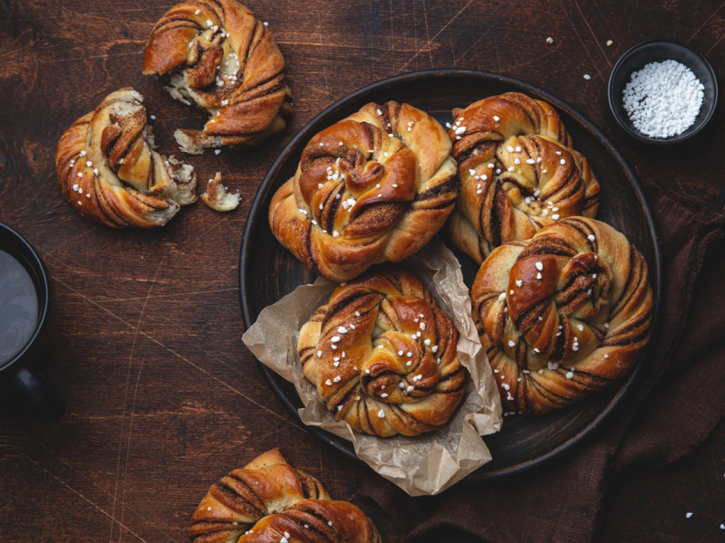

Kanelbullar

Kanelbullar: pãezinhos doces suecos com cardamomo e canela! Eles valem a pena o esforço! E você ainda terá um bônus: um cheirinho incrível de cardamomo que irá se espalhar na sua casa!
Ingredientes
Massa
- 170 g de manteiga amolecida
- ½ xícara (100g) de açúcar
- ½ colher (chá) de sal
- 2 colheres (chá) cardamomo moído
- 2 xícaras de leite (470 ml) morno
- 1 colher (sopa) + ¼ de colher (chá) de fermento biológico seco
- 7 xícaras (875g) de farinha de trigo
Recheio
- 120g de manteiga amolecida
- ½ xícara (100g) de açúcar
- ½ colher (sopa) de canela
- ½ colher (chá) de cardamomo moído
- ¼ colher (chá) de açúcar de baunilha
Para pincelar
- 1 ovo batido
- Açúcar cristal
Modo de preparo
- Misture bem a manteiga, o açúcar, o sal e o cardamomo em uma tigela grande.
- Misture o leite e o fermento e deixe descansando por uns 5 minutos, para ativar o fermento.
- Coloque a mistura de leite na tigela com mistura de manteiga e açúcar.
- Adicione a farinha e misture até que a massa esteja macia e elástica.
- Cubra a tigela e deixe a massa descansando até dobrar de volume (cerca de 1h).
- Misture os ingredientes do recheio e reserve.
- Quando a massa estiver crescida, despeje-a em uma superfície enfarinhada e corte-a ao meio. Devolva uma das metades à tigela.
- Abra a outra metade da massa com um rolo até ter um retângulo grande, de aproximadamente 40cmx50cm e espalhe metade do recheio sobre a massa aberta.
- Faça um envelope com a massa, isto é, dobre o terço superior para baixo e o terço inferior sobre o terço superior, fazendo três camadas.
- Corte este "envelope" e abra um pouco mais, com cuidado para o recheio não escapar.
- Corte tiras de 2cm de espessura e depois corte cada uma dessas tiras ao meio, mas deixando cerca de 2cm no topo sem cortar, para que as duas metades permaneçam unidas.
- Enrole cada dupla de tiras de massa nos dedos, e termine passando um pouco da massa por cima, como se fosse um nó e coloque-os em uma forma forrada com papel manteiga.
- Repita com a outra metade do "envelope" e depois com a outra metade de massa e de recheio.
- Deixe-os descansar por 30 minutos.
- Aqueça o forno a 200º.
- Pincele cada nó com um pouco do ovo batido e polvilhe com o açúcar cristal.
- Asse por 12 a 15 minutos, até que fiquem dourados.